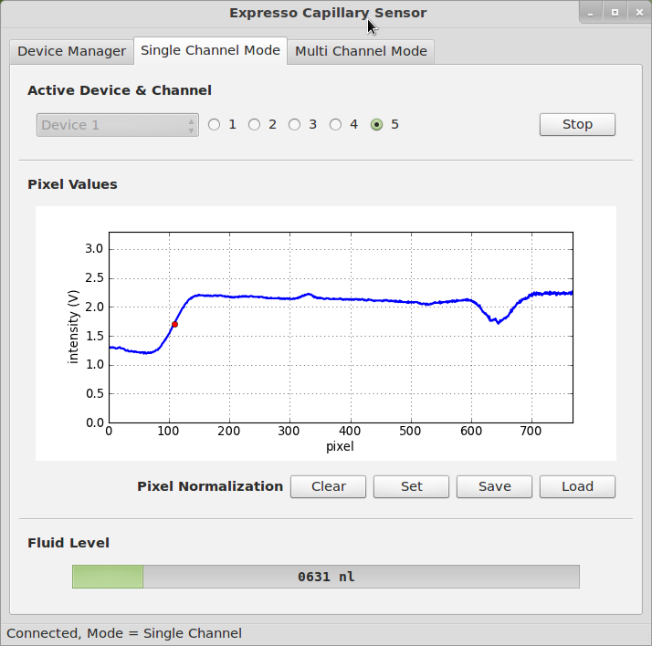
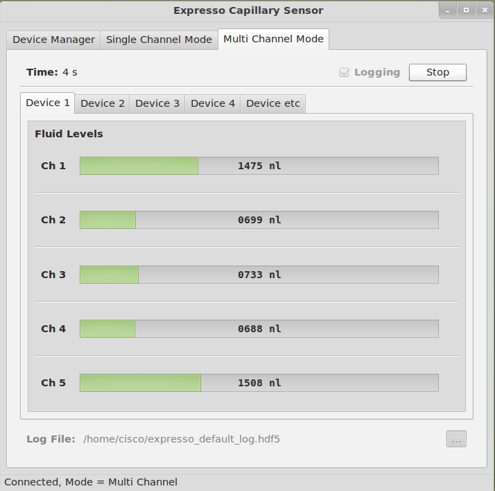

Expresso Documentation
Device Firmware and Acquisition Software
«
Hardware Design Files
::
Contents
Device Firmware and Acquisition Software
¶
Repository and Downloads
¶
A
mercurial
repository containing the latest version of the source for the device firmware and software can be found
here
.
A zipped archive of the firmware and software source can be downloaded here
here
.
A windows binary for device control and data acquisition can be downloaded
here
.
Screenshots
¶
Single-Channel (setup) Mode.

Multi-Channel (data acquition) mode

«
Hardware Design Files
::
Contents